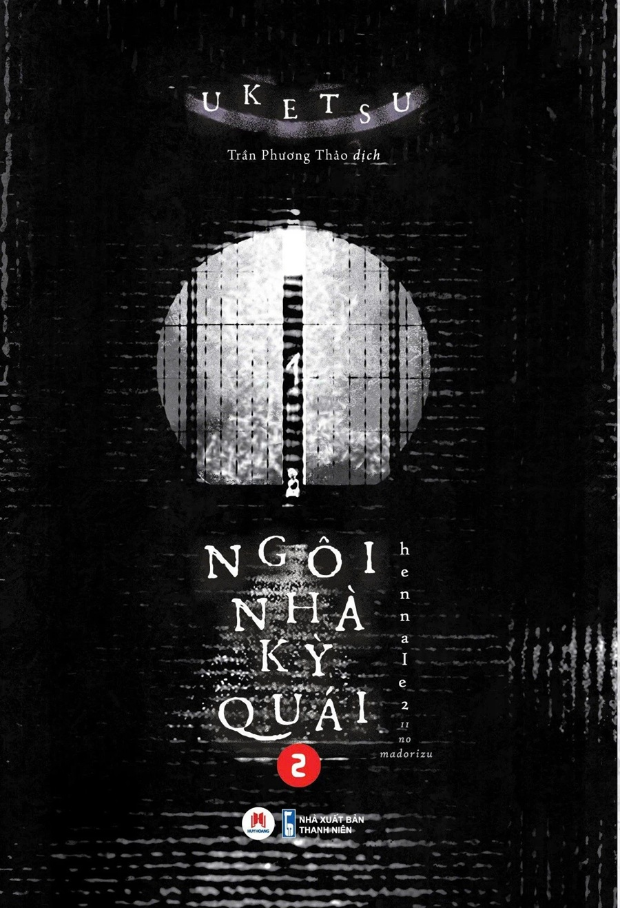

REVIEW SÁCH
Ngôi nhà kì quái 2
Nhận xét của mình
Mình đã vô tình lướt được phiên bản manga của Ngôi nhà kì quái 1 và cũng đã đọc hết nên mình đã tò mò mua cuốn phần 2 này để xem tác giả còn có thể viết được những gì từ chủ đề bản vẽ nhà cửa
Cá nhân mình vẫn thấy cách hành văn của Uketsu rất lôi cuốn, khiến mình cảm thấy tò mò mỗi khi đọc xong 1 chương. Ngôi nhà kì quái 2 không có cốt truyện liên quan tới phần 1 của nó, cuốn này viết về 11 sơ đồ nhà cùng những câu chuyện kì quái, nhìn qua những sơ đồ nhà ấy rất bình thường, không có gì quái dị nhưng qua trải nghiệm của những người trong cuộc, mình mới thấy những câu chuyện giấu bí mật của riêng nó. Càng đọc về sau, càng thấy những liên kết hiện rõ hơn, và còn những nhân vật phía sau liên quan tới những sơ đồ nhà ấy. Nội dung của truyện khiến mình cảm thấy hơi ghê, và có phần thấy một số con người khá bệnh hoạn. Rất đáng để mọi người tìm đọc
🛍️ Tìm mua cuốn sách
Bạn có thể tham khảo giá tại các nhà sách online: